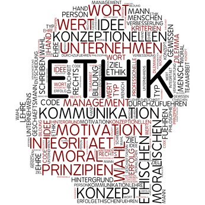

Die Ethik (ēthikē (epistēmē) „das sittliche (Verständnis)“, von ēthos („Charakter, Sinne, Sitte) ist jener Teilbereich der Philosophie, der sich mit den Voraussetzungen menschlichen Handelns und seiner Bewertung befasst. Aristoteles hat zuerst eine Wissenschaft daraus gemacht. Im Zentrum der Ethik steht das moralische Handeln, insbesondere hinsichtlich seiner Begründbarkeit und Reflexion. Cicero übersetzte als erster êthikê in den seinerzeit neuen Begriff philosophia moralis. Deshalb spricht man heute auch von Moralphilosophie, womit Ethik gemeint ist.
Die Ethik kann auch als „praktische Philosophie“ bezeichnet werden, da sie sich mit dem menschlichen Handeln befasst. Im Gegensatz dazu steht die „theoretische Philosophie“, zu der als klassische Disziplinen die Logik, die Erkenntnistheorie und die Metaphysik gezählt.

Disziplinen der Ethik nach Art der Behandlung ethischer Aussagen
| Disziplin | Gegenstandsbereich | Methode |
|---|---|---|
| Deskriptive Ethik | tatsächlich befolgte Handlungspräferenzen, empirisch vorfindliche Normen- und Wertesysteme |
beschreibend, empirisch |
| Metaethik | Sprache und Logik moralischer Diskurse, Methoden moralischer Argumentationen, Leistungskraft ethischer Theorien |
Analytisch |
| Normative Ethik | Prinzipien und Kriterien der Moral, Maßstab moralisch richtigen Handelns, Prinzipien eines für alle guten Lebens |
wertend, je nach Ansatz |
| Angewandte Ethik | gültige Normen, Werte, Handlungsempfehlungen des jeweiligen Bereichs |
wertend, je nach Ansatz |
Als das höchste Gut (summum bonum) wird das bezeichnet, was bedingungslos als das höchste Ziel angesehen wird. Seine inhaltliche Bestimmung hängt daher ab von der jeweiligen Sicht der Natur des Menschen. Es gibt also unterschiedliche Vorschläge:
• das Glück (Eudämonismus)
• die Lust (Hedonismus, klassischer Utilitarismus)
• Macht (Machiavelli)
• Einheit mit Gott bzw. Gott selbst (christliche Philosophie)
• Erwachen (bodhi) zu Weisheit und Mitgefühl (Buddhismus)
• Bedürfnisbefriedigung (Hobbes)
• Einheit von Tugend und Glück (Kant)
• Freiheit (Sartre)